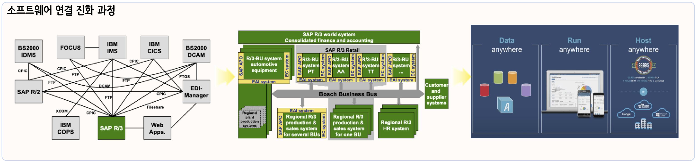
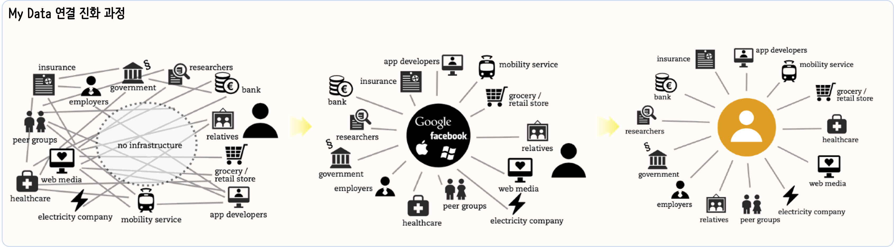
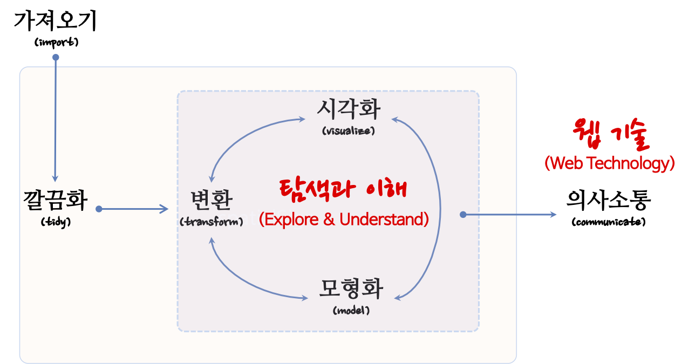

데이터과학 방법론 산업적용 현재와 미래
국가통계방법론 심포지엄: 국가통계의 현재와 미래, 2020. 9. 23.(수)~24.(목), 통계센터
Abstract
빅데이터(Big Data)를 통해 데이터는 과거 RDBMS 정형데이터 뿐만 아니라 비정형 데이터도 충분히 축적될 수 있는 기술적 기반이 마련된 반면에 데이터에 대한 저작권과 라이선스에 대한 이슈가 부각됨에 따라 한동안 혁신의 속도가 주춤했으나, 오픈 공공데이터를 통해서 자유로이 유통될 수 있는 환경이 마련되고 정부에서도 데이터 경제를 표방하면서 제2의 석유라고 불리는 데이터를 원자재로 삼아 부가가치를 창출하는 데이터 산업이 각광받고 있다. 통계학과 컴퓨터 과학을 통해 축적된 데이터에 대한 경험과 지식이 ”데이터 과학“이라는 용어로 새롭게 정립되어 가고 동시에 산업현장에 대한 적용도 활발해지고 있다. 20세기 초반 생명표에 기반하여 보험업이라는 신생 산업이 태동했고, 신용평가모형을 근간으로 하는 신용카드 산업도 빼놓을 수는 대표적인 데이터 산업 중 하나다. 최근에는 단순히 데이터를 사용하기 좋은 형태인 RESTful API로 포장한 구독(Subscription)기반 데이터 사업도 번창하고 있다. 데이터를 산업현장에 적용하여 가치를 창출하는 제품과 서비스를 만들어 유통하기 위해서는 상당한 수준의 소프트웨어 및 데이터 공학(Software and Data Engineering) 기술이 필요한데 이 모든 과정에서 빠질 수 없는 것이 결국 사람이다. 데이터 과학자는 데이터 기반 제품과 서비스 원가의 대부분을 차지하면서도 데이터에서 가치를 가장 많이 창출하는 자리에 있다. 데이터 과학자가 어떤 언어와 방식으로 작업하느냐에 따라 눈에 보이지 않는 생산성은 물론이고 유지보수와 밀접한 관련이 있는 품질에도 지대한 영향을 미친다.”X 문법 (Grammar of X)“을 표방하는 새로운 Tidyverse 방법론은 데이터 문법(Grammar of Data, dplyr), 그래프 문법(Grammar of Graphics, ggplot2), 모형 문법(Grammar of Models, tidymodels) 등으로 구성되며 내재된 추상화와 모듈화 개념을 한번만 배우면 확장 가능한 고품질 데이터 과학 제품과 서비스 개발이 가능케 되었다. 이제 이러한 데이터 과학 혁신 방법론을 통해 더 나은 미래를 만들어가는데 성큼 다가설 수 있게 되었다.
데이터 과학 산업규모
제2의 석유 데이터

과거 석유가 가장 중요한 자원으로 풍미하던 시절이 있었다. 하지만 이제 더이상 석유가 가장 중요한 자원이 아니라 이제는 누구라도 데이터(Data) 라고 말하는 것이 어색하지 않은 세상이 되었고 많은 분들이 이에 동의하고 있다. @economist2017world
데이터 과학 제품/서비스 생산공장
석유
원유를 정제하게 되면

비용
데이터 과학의 목표는 원자료(raw data)를 또다른 형태로 수작업 혹은 자동화하는 프로그램을 작성하여 전환하거나 매핑하는 과정이다. 데이터 과학자에 관한 하바드 비즈니스 리뷰 기사 에 따르면, 21세기 가장 인기있는 직업이 데이터 과학자[@davenport2012data]로 친송받고 있지만, 데이터 랭글링에 관한 뉴욕타임즈 기사[@lohr2014big]에 따르면 데이터 과학자 시간의 50% ~ 80% 시간을 데이터를 수집, 준비, 정제 등의 노동집약적인 작업에 소모하는 것으로 보고되고 있다.
데이터 과학은 컴퓨터와 사람이 데이터 프로그래밍 언어(예를 들어, R)로 소통하는 과정으로 이해할 수 있다. 사람이 인지하여 생각한 것을 코딩을 통해 기술하고 이를 컴퓨터에 넣어주면, 컴퓨터가 이를 실행하는 과정이다. 과거, 컴퓨터 자원이 희귀하여 최대한 컴퓨터을 활용하는 점에 초점을 맞춰 데이터 과학 아키텍처가 설계되었다면, 현재는 클라우드, 오픈소스, 오픈 데이터, 인터넷에 연결된 수많은 컴퓨터로 말미암아 사람이 가장 중요한 자원이 되었고, 컴퓨터에 작업명령을 기술하는 코딩도 기계중심 프로그래밍 언어에서 인간중심 프로그래밍 언어로 진화하고 있다.

가치
전통산업 난이도에 따라 마치 경공업, 중화학공업, 반도체 전자공업과 같이 난이도가 높아짐에 따라 창출되는 가치가 달라지듯이 주어진 데이터 자원을 가지고 창출되는 가치는 기술 난이도에 따라 달라진다. 가트너가 제시한 데이터를 활용하는 4단계 즉, 기술분석, 진단분석, 예측분석, 처방분석 단계에 따라 창출되는 가치는 달라지게 된다. 기술분석에서 진단분석을 통한 뒤늦은 깨달음 복기(Hindsight), 진단분석에서 예측분석으로 가는 깨달음/통찰력(Insight), 예측분석에서 처방분석을 통한 예지력/선견지명(Foresight)을 추구하고자 하지만, 그에 따른 어려움은 더욱 가중된다.
- 기술 분석(Descriptive Analytics): 무슨 일이 있었나? (What happened?)
- 진단 분석(Diagnostic Analytics): 왜 일어났나? (Why did it happen?)
- 예측 분석(Predictive Analytics): 무슨 일이 일어날까? (What will happen?)
- 처방 분석(Prescriptive Analytics): 어떻게 그런 일을 일으킬까? (How can we make it happen?)

데이터 과학 경제: API Economy
API: [@collins2015api; @puschmann2001enterprise] MyData: [@poikola2015mydata]
소프트웨어 교환

데이터 교환

가치 교환
데이터 → 전이학습(transfer learning)
데이터 과학 방법론: Tidyverse
